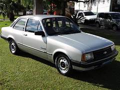
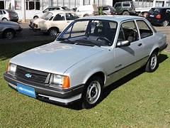
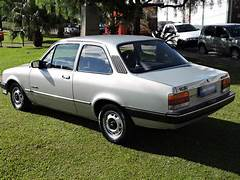

chevrolet chavette de 1970
ficha tecnica

O Chevrolet Chevette da década de 1970 era equipado com motor de 4 cilindros, geralmente com cerca de 1.4L de cilindrada, movido a gasolina, com potência em torno de 60 a 70 cv. Possuía tração traseira e câmbio manual de 4 marchas.Sua velocidade máxima ficava aproximadamente entre 140 e 150 km/h. O modelo tinha carroceria sedã de 2 portas (com outras versões surgindo depois) e se destacava pelo tamanho compacto e pela proposta econômica.Entre as características gerais, contava com direção mecânica, freios a tambor (com disco na dianteira em versões mais novas) e suspensão simples, voltada para durabilidade e conforto no uso diário.
hitoria

A história do Chevrolet Chevette começa no início da década de 1970, quando a Chevrolet desenvolveu o modelo como parte de um projeto global da General Motors para criar carros compactos e econômicos.O Chevette foi lançado mundialmente em 1973, mas chegou ao Brasil em 1973/1974, sendo um dos primeiros carros nacionais com proposta mais moderna e voltada para economia de combustível. Ele foi criado para atender a um público que buscava um veículo acessível, prático e confiável para o dia a dia.No Brasil, o Chevette rapidamente se tornou popular graças à sua resistência, baixo custo de manutenção e mecânica simples. Ao longo dos anos, recebeu diversas atualizações e versões, permanecendo em produção até a década de 1990.Assim, o Chevette marcou época como um dos carros mais importantes da Chevrolet no país, sendo lembrado até hoje como um modelo clássico e confiável.
curiosidades

O Chevrolet Chevette tem várias curiosidades interessantes. Ele fez parte de um projeto global da Chevrolet, sendo vendido em diversos países com nomes e versões diferentes. No Brasil, foi um dos primeiros carros populares a apostar na economia de combustível, algo que se tornou ainda mais importante com as crises do petróleo da época.Outra curiosidade é que o Chevette manteve a tração traseira, algo incomum para carros compactos que vieram depois, já que muitos passaram a usar tração dianteira. Isso acabou tornando o modelo querido por entusiastas, especialmente para adaptações e uso em competições.Além disso, o Chevette ficou muitos anos em produção no Brasil, passando por várias atualizações, mas mantendo sua mecânica simples e confiável, o que ajudou a consolidar sua fama de carro resistente e de baixo custo de manutenção.
proxima pagina
pagina anterior